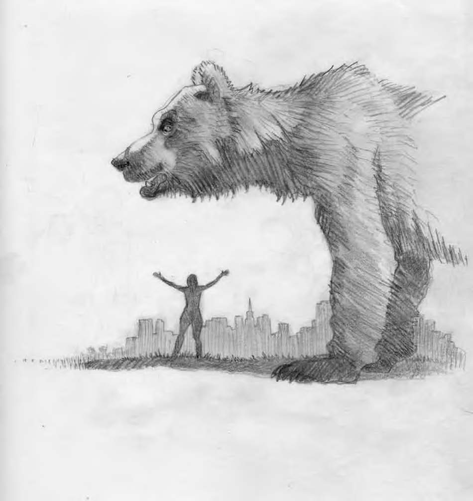

Although I regularly recall several dreams a night (actually, in the wee hours of the morning), it has been a long time since I’ve been moved to record them or been touched by the muse to write articles about them. Nonetheless, I treasure my dream state and trust that it mindfully influences my waking life in a positive, albeit mysterious manner. I always try to be patient, note patterns and incubate for understanding.
For the past year, I have been plagued by anxiety dreams with a recurring theme: futilely attempting to pack a suitcase amid chaos. Too many things, so little time and space. A cast of thousands. I awaken exhausted. Now, on the surface, the meaning of these dreams is far from mysterious. In less than a year, I am anticipating a move. The very idea is stressful to me: uprooting from a neighborhood I love; harboring misgivings about whether or not I am making the right decision; all the red tape and masking tape. Change is hard. I get it! I get it! Is this unrelenting barrage on the part of my unconscious really necessary? But, of course, there is way more to the message than meets the closed eye! In waking life, I have become obsessed with the negative changes happening to San Francisco: Manhattanization at an exponential rate; more and more tall buildings going up; overcrowding of parks and busses; excessive, unceasing noise pollution; newcomers with, not flowers in their hair, but cellphones in their ear; rampant greed displacing long time residents of moderate means. My anger and bitterness and utter heartbreak were eating me alive. I knew that I had to either make peace with the changes or leave my beloved city. Then I dreamt...
KISSING THE BEAR (April 3, 2014)
I am walking around San Francisco. It is so changed that I cannot easily find my way. Van Ness Avenue (Route 101) has turned into a one lane, serpentine roadway with electric trolleys. I just miss one (trolley), and realize that if I don’t start running, I will be very late to my destination.
I make my way through narrow alleys with older architecture reminiscent of European cities, but then emerge into a totally modern/futuristic area with shiny, wide and colorful square buildings that are for the most part only 4 or 5 stories high; one is constructed of mirrored glass with black and red stripes. There are few skyscrapers and many spacious, clean plazas and no automobiles or mobs of people. As I continue to run furiously, I get the idea of being in two places at once, so I visualize myself in the place I am supposed to be right now: helping my friends to sort things out and pack. The room is gigantic and full of people folding and trying on clothing. It reminds me of a bargain basement sale. I see myself there calmly mixing and mingling and lending a hand.
Suddenly a gigantic brown bear—the size of a dinosaur-- plops itself down in the middle of the plaza. Everyone starts screaming and scattering, except one woman. It is L. from my neighborhood. I stop running and watch with awe as she floats up to the bear’s monstrous head and kisses it gently on the lips.
When I awake, I know that this is a special dream, the one I have been waiting for. Immediately, I write it down and start composing this piece for Dream Network Journal. I feel energized rather than anxious, which had been the case for months now when it was time to get up and face ‘reality.’ My chronic block against thoughtfully examining my dreams lifted and ideas and associations began flowing.
The most dramatic image in my block-buster dream, without a doubt, is the larger-than-life bear. Official emblem for the California Republic, and incidentally enough, also for the Italian region of Abruzzi, where my grandmother was born. The woman ‘L.’ who fearlessly approaches the beast, lives in my neighborhood in ‘real’ life. Polk Gulch is one of the areas in San Francisco that is in the process of drastic transformation. On three sides of the older, rent-controlled apartment house where she has resided for many years, the buildings are being torn down and replaced by high-rise, high cost condominiums.
After months of expressing justifiable rage and helplessness at the relentless noise and dust and encroaching darkness, she took the bull by the horns—or should we say, the bear by the jaws—and boldly initiated a transformation of her own by embracing the change and the changers. The owner and other tenants of L’s building rallied around her to mediate certain conditions; for instance, the landscaped inner courtyard with Bocce Ball courts and barbeque grills that is part of the new complex will be accessible to them, also. And she convinced the foreman of the construction crew to prune the sprawling avocado tree in their backyard for no charge, saving the landlord a great deal of money or the possibility of having to destroy it. The last time I ran into L. she was beaming and insisted on giving me a tour of the construction sites, focusing on the positive aspects: “See how much wider the side walk is now?” and “No more ‘used condom alley’ out my side window.”
So, it’s no wonder that L. showed up in the dream in the role that she did. And what of the dreamer’s role? I am directed toward helping my friends ‘sort things out and pack.’ Here we go again with that recurring theme, except this time, the atmosphere is calm rather than chaotic— once I encounter the Embracer of Change kissing the Bear.
The day before I had the dream, I met with an old, dear friend, who also feels negatively impacted by the onslaught of changes going on around her. Instead of giving one another support, we ended up arguing and pitting our anger and fear against each other. I was particularly distraught because M. in her youth was a great source of strength and inspiration for me, by the very virtue of her ability to adapt to new situations as she navigated around becoming a slave to the Status Quo.
The dream made it clear that I need to ‘bear’ the transforming cityscape in a more constructive manner in order to help M. and other friends who are feeling even more vulnerable and scared than I am—especially those with less financial resources and options (which the dream alluded to via the suggestion of a bargain basement). Unlike the other characters that are rummaging through clothes and preparing to leave, the dreamer has a choice of being in two places at once: in the plaza with the Bear and in the basement with her friends; in addition, she exists both in the dreaming and waking realm.
Curiously enough, although it is my dream-self that is running through San Francisco’s distant future—one that has evolved beyond the seemingly short-sighted, unenlightened changes that are happening right now, it is not until my waking-self recalls the dream that I realize how the City presented in the dream is actually in tune with my idealistic hopes and visions: No cars. Narrow, meandering roadways offering environmentalysound public transportation. Few sky-blocking buildings. Lots of light, greenery and open space. Older architecture preserved (or rebuilt?) to honor the past. Ah, yes, I could embrace changes like that! So why does my dream-self not take notice of the details of her gloriously redesigned (though barely recognizable) homeland? Could it be to remind me that I must not get too attached to any particular change—good or bad— because, it too, will change?
And why does the theme of change manifest in the form of an animal? Perhaps to convey the concept that change is part of the natural order of things. Which is not to say that we, as humans, should not question change or completely capitulate to it.
We do have the power to positively influence the undesirable transformations by kissing the bear, so to speak, rather than fleeing from it or wildly charging it with spears. The dreamer is inspired by L.’s amazing way of interacting with the Bear and stops running. She has reached her destination: a state of mind in which she can be in harmony with this powerful representative of change as well as with those it is most affecting, including herself. The Bear is no longer in the way, but is the way.
In her position above ground, the dreamer is indicative of the outer circumstances I need to adjust to; her simultaneous presence in the basement, often a symbol for the unconscious, points to the inner workings I need to adjust— namely, my attitude and perspective. So then, I am at once the changer and the object of change; I am invited to take an active part in harnessing the unstoppable forces that are altering my world. I can evolve beyond the mentality of victim and perpetrator.
The sorting and packing scenario speaks to a more obvious and minor concern (Ursula Major and Minor!): changing my address. In the larger scheme of things, this is not a big deal—especially since I will still be residing in San Francisco. Nonetheless, the prospect has been the cause of enough anxiety to get the attention of my unconscious; thus, the series of dreams about preparing to relocate—whose multiple meanings/messages I am just beginning to cultivate. For example, another association that I am exploring is Bear as spirit guide … considering that the creature appeared in the dream by dropping out of the sky. And do I ever need the steadfast presence of a Higher Power to encourage me to remain strong and mindfully detached in the trials ahead! The changes to San Francisco are happening over night, but my ability to better deal with them will be an ongoing challenge. Bear is not only a bastion of strength, but knows when to lie low, disengage from the battles of life for awhile; hibernate and then emerge a bit more vulnerable, grateful and eager to seek out the miracles of a renewed landscape.
As winter turns to spring, one change depends upon and precipitates another. The transformed San Francisco that so pleased the awakened dreamer could not have come into being without the nightmarish transition that is currently taking place. Learning to embrace the smaller transitions can help us to prepare for greater ones; the time may indeed come when I need to let go of San Francisco and move on—if not during the course of my life, then most certainly at the end of it. For, there is no escaping the greatest transition and transformation of all. I’m sure that even the passage from this life to the next—the most inevitable and all encompassing of changes—can be negotiated with a fearless, open-heart if we pay attention to and honor our dreams. Easier said than done, but I feel blessed to be taking the first small steps with Bear at my side. ∞